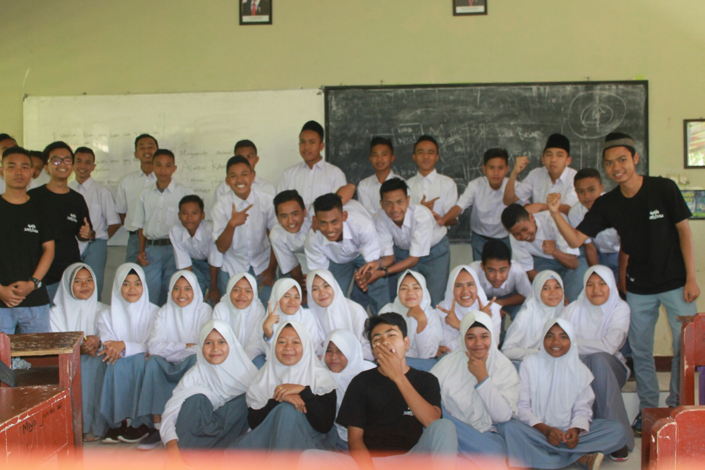

Perjalanan
Cerita ini dimulai ketika aku masih SMA (Sekolah Menengah Atas), aku bersekolah di SMA Negeri 1 Suela, yang bertempat dibawah kaki Gunung Rinjani
SMA
Ini adalah foto kami bersama murid baru yang sedang berlangsung di sekolahku, ketika itu aku dan teman-temanku menjadi OSIS di sekolahku. Ini adalah pengalaman pertamaku ikut organisasi di sekolah, walaupun waktu itu aku masih pemalu, dan ini adalah moment yang tidak akan terlupakan.
Kuliah

Foto ini diambil ketika aku dan teman-temanku mengadakan sebuah seminar Entrepreneur di kampus, walaupun acaranya sederhana tapi ini adalah sebuah pengalaman saya yang pertama membuat sebuah seminar, dan alhamdulillah acaranya berjalan dengan sangat baik.